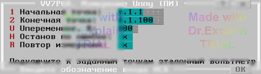

4.10 VV7PGR. Измерение U переменного (КН Т)
Утилита определяет погрешность измерения переменного напряжения штатным вольтметром. Предоставляется меню (см. рисунок 1).

Параметры меню
- «Начальная точка» и «Конечная точка» — входы АСК, к которым подключаются эталонный вольтметр и источник переменного напряжения. Точки могут принадлежать любому БК конфигурации.
- «U переменное» — напряжение, которое необходимо выставить на заданных точках источником переменного напряжения.
-
«Источник Uперем» — выбор источника переменного напряжения:
- «ППУ» — используется внутренний программируемый источник;
- «Внешний» — внешний источник, чьи выходы обычно подключают к внутренним шинам A и B начальной и конечной точки (шины выведены на переднюю панель БК) или непосредственно к самим точкам.
К выбранным точкам подключите эталонный вольтметр.
Автоматические действия после ввода параметров
- Начальная точка подключается к шине A1.
- Конечная точка подключается к шине B1.
-
При выборе источника «ППУ»:
- ППУ подключается к шинам A1, B1;
- устанавливается заданное значение Uппу, измеряется вольтметром и при необходимости корректируются коэффициенты автокоррекции.
- После предупреждения о подаче высокого напряжения на коммутатор появляется второе меню (см. рисунок 2).
Введите напряжение, измеренное эталонным вольтметром. Это значение будет использовано для расчёта погрешности. Нажмите Enter.
Результаты измерения
Штатный вольтметр выполняет измерение. В протокол выводятся сообщения вида:
$TST1 Uд.б=100В+-5.00% Uизм=100.0В Погр=+0.00% $TST1 Измерений:1 Все норма ПОГРmin=0 ПОГРmax=+0.00%
После завершения предоставляется меню (см. п. 6.3).